My Top Destinations:
Sicily
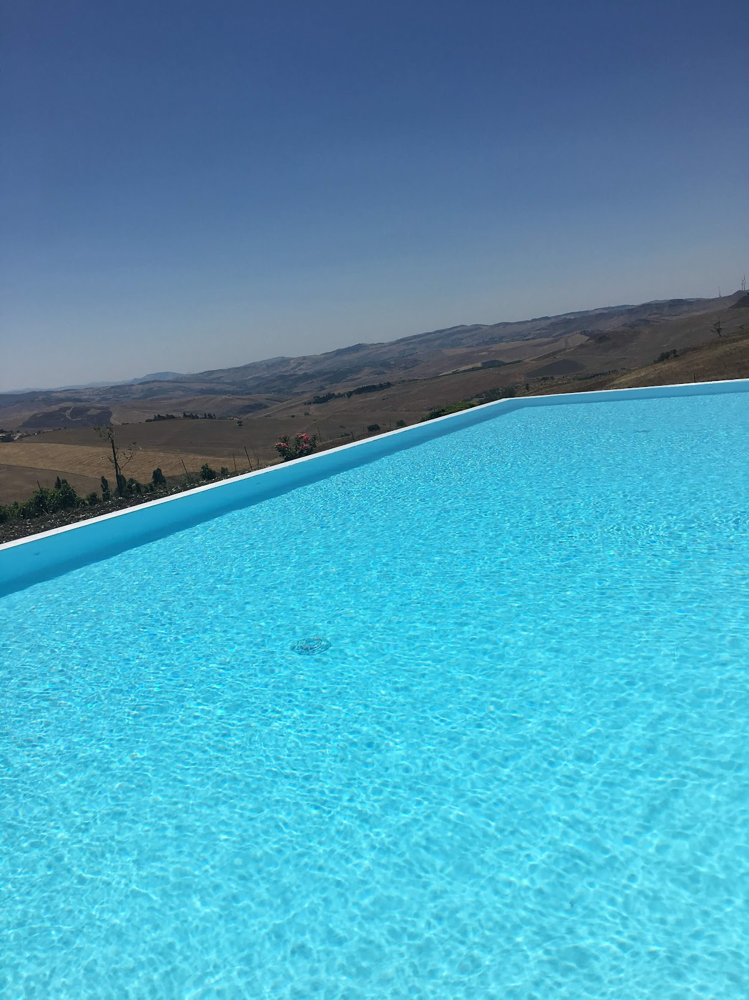
The beautiful view from our pool at the villa we stayed in.
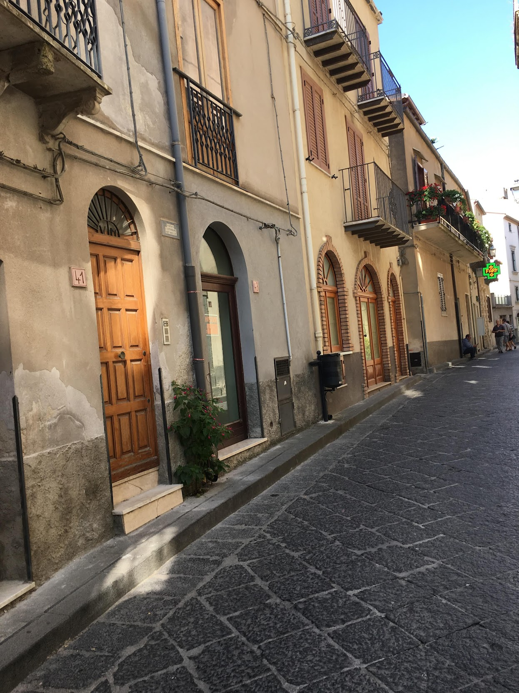
This a street in the hometown of my great-grandfather, Polizzi Generosa
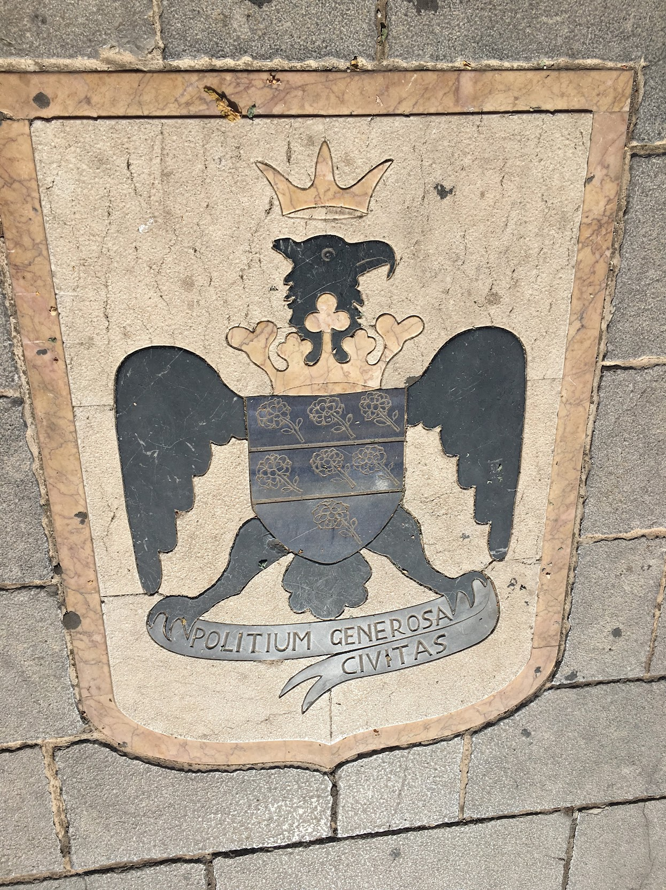
A stone on the street of Polizzi Generosa
Check out this cool drove footage of Polizzi Generosa!
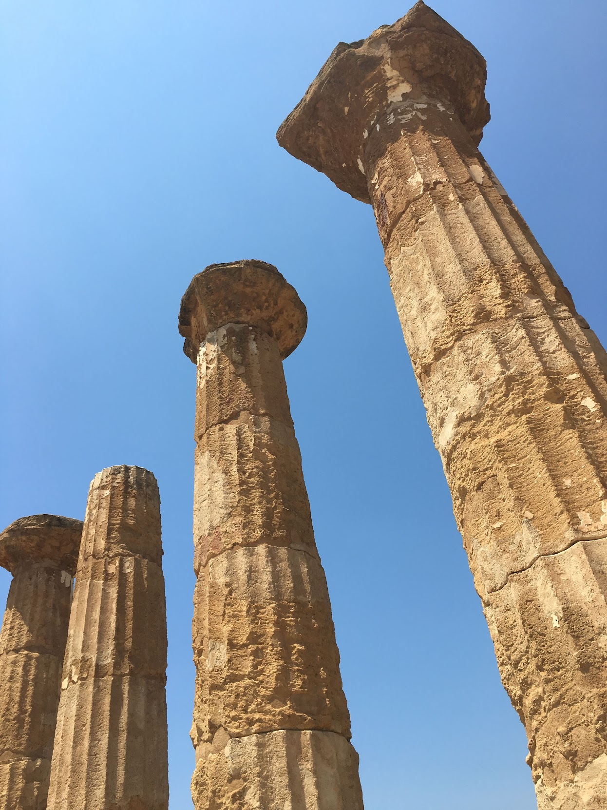
Pillars that remain from an ancient Greek city in Agrigento
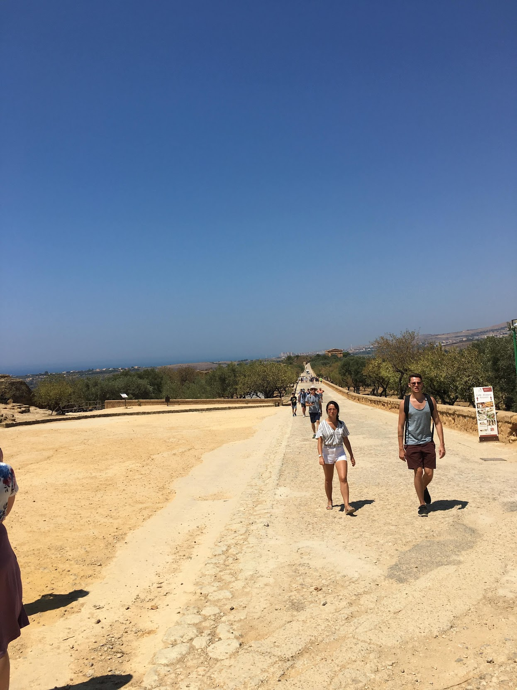
A street in Agrigento
Germany
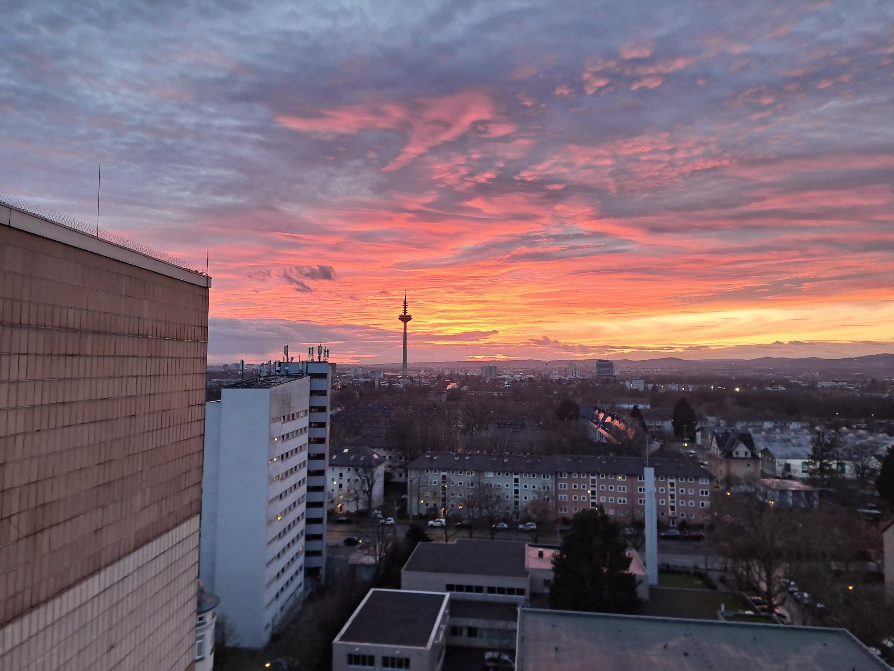
The view from my apartment in Frankfurt
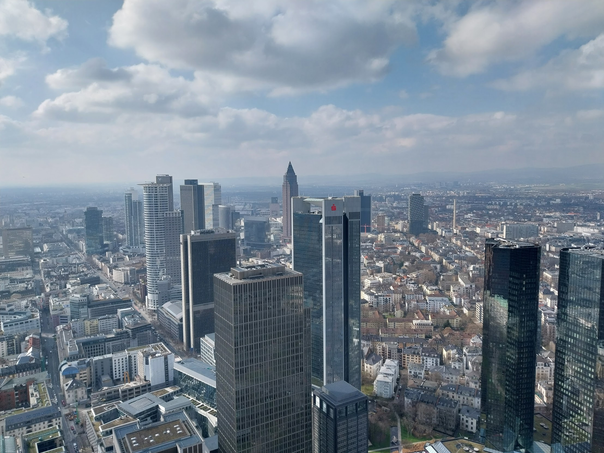
Frankfurt Skyline from atop one of Frankfurt's tallest buildings
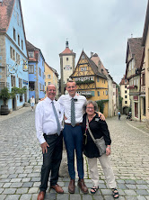
Me with my mission leaders in Rothenburg ob der Tauber
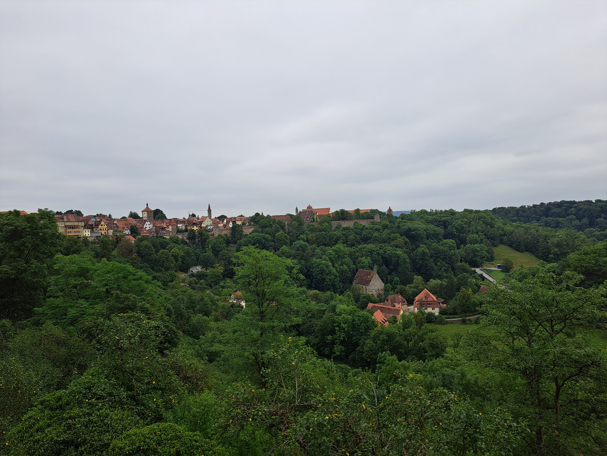
Rothenburg ob der Tauber as seen from the hills just outside the city
Lake Superior
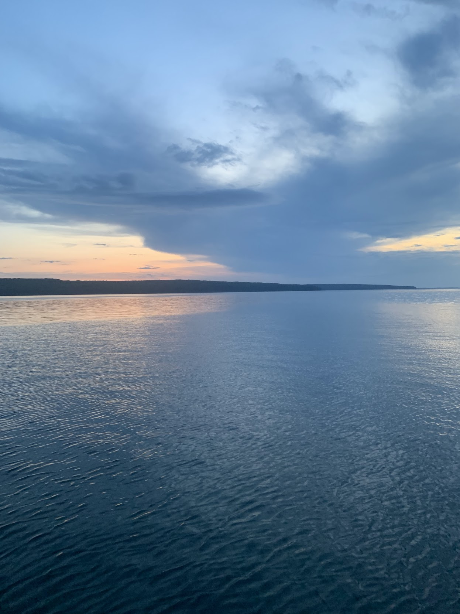
On Lake Superior looking at one of the Apostle Islands
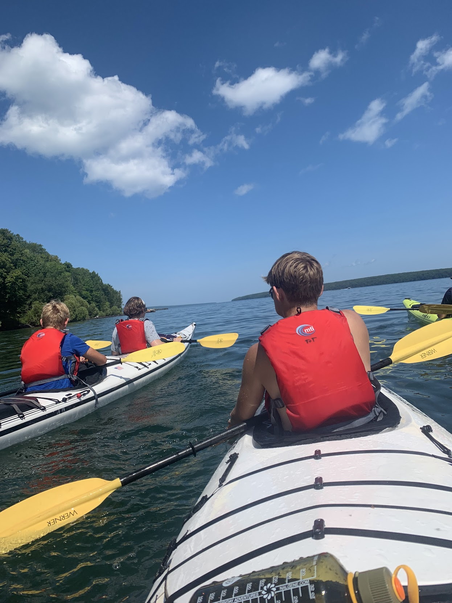
The view of Lake Superior from my kayak
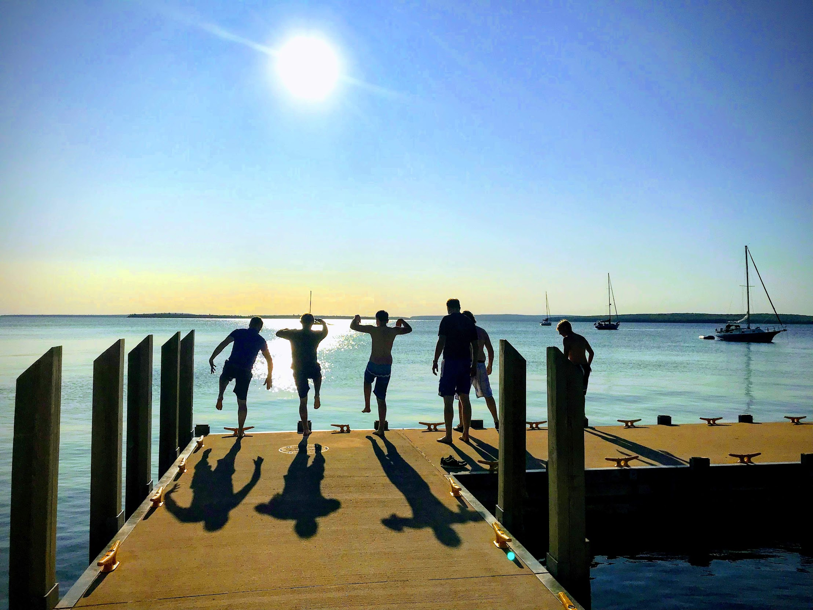
My friends and I jumping from a dock into Lake Superior
Bored of this Website?! Check out: